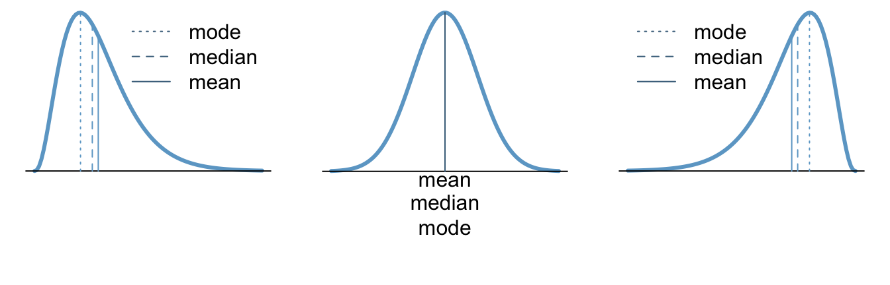

Lesson 3: Describing Quantitative Data
Lesson Introduction
Recall from Lesson 2 the five steps of the Statistical Process:
| The Statistical Process | |
|---|---|
 |
Design the Study |
 |
Collect the Data |
 |
Describe the Data |
 |
Make Inference |
 |
Take Action |
This lesson focuses on Describing Data, Step 3 of the Statistical Process. It will demonstrate how to describe quantitative data both with numerical summaries like the mean, median, mode, five-numer summary, and standard deviation as well as with graphical summaries, like histograms and boxplots.
Case Study: Tuberculosis Costs
Case Study Objective: Demonstrate how to describe quantitative data.

Tuberculosis (TB) is the most deadly bacterial disease in the world. In 2009, there were almost 2 million deaths worldwide due to the disease.
Currently, the principal vaccine used to prevent tuberculosis is Bacille Calmette Guerin (BCG), which is expensive to administer and only moderately effective at preventing tuberculosis. This is especially dramatic in India where the number of tuberculosis cases has been particularly high. The total average (mean) cost to society to treat a case of tuberculosis in India has historically been $13,800.
Design the Study
Suppose the Indian Government wants to determine if the average (mean) cost of treating tuberculosis has increased in recent years over the historical number of $13,000. In other words, is there any evidence of inflation in the cost of treating tuberculosis in India?
To effectively make a decision about the true current average cost of treating tuberculosis, the estimated average cost in India will be compared to the historical average cost of treating a case of tuberculosis.
Collect the Data
Health Care records of tuberculosis patients in India were surveyed to estimate the true cost in India to treat patients with tuberculosis. The following data are representative of the total costs (in US dollars) incurred by society in the treatment of 10 randomly selected tuberculosis patients in India.
15100, 19000, 4800, 6500, 14900, 600, 23500, 11500, 12900 and 32200
These costs include health care treatment, time missed from work, and in some cases utility lost due to death.
Describe the Data
When describing quantitative data, the goal is to show how the data is spread out. Statisticians refer to this as summarizing the distribution of the data. Of greatest interest are the shape, center, and spread of the distribution. Two very commonly used approaches to describing the distribution of data are demonstrated below as Option 1 and Option 2.
Note that a statistical analysis would only use one of these approaches, not both, to describe the distribution of the data. Both options are demonstrated here for educational purposes only.
One way to summarize the distribution of the data that was collected in Step 2: Collecting Data is by creating a graph called a histogram, which is shown in the plot below. Notice that each “bin” in the plot (the vertical boxes) has a height equal to the number of data points that occurred within that bin. From the histogram we can determine the shape and center of the distribution of “costs of treating tuberculosis in India”.
The shape of the distribution could be considered right-skewed. You can see this in the histogram below by noticing the taller bars are on the left and the shorter and outlying bars are on the right.
The best measure of the center of the distribution to report when using a histogram is the sample mean, \(\bar{x}\). For these data, the sample mean is \(\bar{x}=\$14,100\). Locating the value of \(\$14,100\) in the histogram below (black triangle) visually confirms that the sample mean is a good measure of the center of the histogram.
We have summarized two of the most important characteristics of a distribution: the shape and the center by using the histogram and the sample mean, \(\bar{x}\). It is also important to summarize a third characteristic of a distribution of data: the spread.
The spread of a distribution of data describes how far the observations tend to be from the center of the distribution. When using a histogram, one of the best ways to describe the spread of distribution is with the standard deviation.
The calculation and conceptual understanding of the standard deviation is very involved. You should read about standard deviation to understand better what it is and how it is calculated.
For the tuberculosis data, the standard deviation is \(\$9,287.51\). This tells us that values typically deviate from the mean by around \(\$9,287.51\). Clearly some values are farther from the mean than \(\$9,287.51\) and some are closer to the mean than that, but the typical or “standard” value of the deviations of the points from the mean is given by the “standard deviation.” This provides a good feel for how spread out the data is around the mean. When the standard deviation is small, the values are very close to the mean. When the standard deviation is large, the values are very spread out around the mean. For this data, the standard deviation is fairly large. The values vary quite a bit from the mean of $14,00.
Another approach for the data that was collected in Step 2: Collecting Data is to determine the shape and center of the distribution using a boxplot, which is shown in the plot below. A boxplot is a graphical representation of five important numbers: the minimum value, the first quartile (25th percentile), the median (50th percentile), the third quartile (75th percentile), and the maximum value in the data. These five numbers are called the five-number summary and are always presented in that order.
You should read about percentiles to ensure you understand what the 25th, 50th, and 75th percentiles represent.
The five-number summary provides a very useful feel for the center and spread of the distribution of data, especially when the distribution is skewed. The five-number summary for the current data is:
| min | Q1 | median | Q3 | max |
|---|---|---|---|---|
| 600 | 7750 | 13900 | 18025 | 32200 |
The shape of the distribution could be considered to be skewed right. This is shown in the boxplot because the minimum is close to the box of the boxplot while the maximum is farther away from the box.
The center of the distribution is \(\$13,900\) as described by the median which is quickly located in the plot below as the thick black line inside the box.
After summarizing the data numerically and graphically, we are ready to make inferences about the population.
Make Inference
As mentioned previously, the historical total mean cost to society to treat a case of tuberculosis in India is known to be \(\$13,800\).
Given the evidence in the data, we see that the sample mean is \(\bar{x} = \$14,100\) and the sample median is \(\$13,900\). This seems to suggest that the average cost is now higher than \(\$13,800\). However, as calculations that you will learn later on the course will show, there is actually not enough evidence to officially make this conclusion. In other words, there is insufficient evidence to suggest that the true mean cost \(\mu\) of treating tuberculosis in India is greater than \(\$13,800\). Thus we will continue to assume the null hypothesis is true, that the true average cost is still \(\mu = \$13,800\).
Note that the symbol for the true mean is \(\mu\) and the symbol for the sample mean is \(\bar{x}\).
Take Action
After making inferences, you take action. Since we failed to reject the null hypothesis, we find that there is not enough evidence to conclude that there is inflation in the cost of treating tuberculosis. There is no need to for the Government of India to take action.
Note
There were many new concepts discussed in this case study. Be sure to study the Concepts and Definitions section carefully to ensure you understand them.
Concepts and Definitions
Distributions: Shape, Center, and Spread
Distributions describe how quantitative data is spread out. They show which values are most common as well as which values are possible, but less common.
There are three main characteristics of a distribution: shape, center, and spread.
Shape
We will describe the shape of the distribution of a data set using the following basic categories: right-skewed, bell-shaped (which is symmetric), and left-skewed.
| A distribution is right-skewed if the distribution shows a long right tail. This can occur if there are some outlying values on the high end of the distribution. | A distribution is bell-shaped, or symmetric if both the left and right side of the distribution appear to be roughly a mirror image of each other. | A distribution is left-skewed if it has a long tail to the left, which can occur when there are outliers on the low end of the distribution. |
Center
There are three common measures of center: the mean, the median, and the mode. Measures of center give a good feel about the typical, or most common values in a dataset. They are most meaningful when most of the data is close to the center.

| Right-skewed | Bell-shaped | Left-skewed |
|---|---|---|
| In a right-skewed distribution, the mean is skewed to the right of the median, and both are skewed to the right of the mode. | The mean, median, and mode are the same in a bell-shaped distribution. | In a left-skewed distribution, the mean is skewed to the left of the median, and both are skewed to the left of the mode. |
Spread
Common measures of spread include: the standard deviation and the five-number summary. Measures of spread help us understand how consistent (or inconsistent) the data is around the center of its distribution. They provide a measurement of the variability of the data.
Histograms
Overview
A histogram is a statistical plot that visually summarizes the shape of the distribution of quantitative data using frequency bars that group neighboring observations into bins.
Excel Instructions
Step 1
Enter your data into Excel and highlight the data using your mouse.

Step 2
Explanation
Histograms are only used for quantitative data.
Histograms give a quick visual understanding of which values are most typical in the data and which values are least typical. They also provide an intuitive feel for the location of the mean of the data.
Histograms readily depict the overall shape of the distribution of data. A distribution is right-skewed if a histogram of the distribution shows a long right tail. This can occur if there are some very large outliers. A distribution is left-skewed if a histogram shows that it has a long tail to the left.
How a Histogram is Made
- The number line is divided into consecutive intervals called bins. Typically between 5-15 bins are used, but any other option is possible.
- The number of observations from the data set that occur in each bin is recorded. These counts are called frequencies.
- Vertical bars are drawn for each bin such that the height of the bar corresponds to frequency of observations that occur in the bin. See the Example below for details.
What this Looks Like
The following data are representative of the total costs (in US dollars) incurred by society in the treatment of 10 randomly selected tuberculosis patients in India.
15100, 19000, 4800, 6500, 14900, 600, 23500, 11500, 12900 and 32200
Since the smallest data value is 600 and the largest is 32,200, we will divide the number line from 0 to 35,000 into seven equal bins, each of width 5,000. We will then count the number of data points in each of these intervals. The following table shows this process for the tuberculosis data.
| Interval | Number of Observations |
|---|---|
| At least 0 and less than 5,000 | 2 |
| At least 5,000 and less than 10,000 | 1 |
| At least 10,000 and less than 15,000 | 3 |
| At least 15,000 and less than 20,000 | 2 |
| At least 20,000 and less than 25,000 | 1 |
| At least 25,000 and less than 30,000 | 0 |
| At least 30,000 and less than 35,000 | 1 |
For each of the bins listed above, we draw a bar on the histogram. The width of the bars is determined by the width of the bin (5000 in this example). The height of the bars is equal to the number of observations that fall in each interval. The result looks as follows.
Boxplots
Overview
A boxplot is a statistical plot that visually summarizes the distribution of quantitative data using the five-number summary.
Excel Instructions
Step 1
Highlight the data.
Step 2
Select “Insert” from the file menu.
Step 3
Select “Other Charts” icon charts menu that appears.
Step 4
Choose the Boxplot icon from the options.
Explanation
Boxplots are only used for quantitative data.
Boxplots provide a quick visual understanding of the location of the median as well as the range of the data. They also readily depict the middle 50% of the data and can be useful in showing outliers.
How a Boxplot is Made
- The five-number summary is computed.
- A box is drawn with one edge located at the first quartile and the opposite edge located at the third quartile.
- This box is then divided into two boxes by placing another line inside the box at the location of the median.
- The maximum value and minimum value are marked on the plot.
- Whiskers are drawn from the first quartile out towards the minimum and from the third quartile out towards the maximum.
- If the minimum or maximum is too far away, then the whisker is ended early (as on the boxplot shown above for the skewed left data).
- Any points beyond the line ending the whisker are marked on the plot as dots. This helps identify possible outliers in the data. See the Example below for details.
What this Looks Like
The following data are representative of the total costs (in US dollars) incurred by society in the treatment of 10 randomly selected tuberculosis patients in India.
15100, 19000, 4800, 6500, 14900, 600, 23500, 11500, 12900 and 32200
The five-number summary of these data is given as follows.
| min | Q1 | median | Q3 | max |
|---|---|---|---|---|
| 600 | 7750 | 13900 | 18025 | 32200 |
The resulting box plot looks as follows.

Mean, Median, Mode
The mean, median, and mode are all measures of the center of a distribution of data.
Overview
The sample mean, denoted by \(\bar{x}\), is computed by adding up the values of the observed data and dividing by the number of observations \(n\) in the data set.
The population mean, denoted by \(\mu\), is obtained by computing the mean of all the data from the full population.
The median is the “middle” value in a sorted data set. When there are an odd number of points, the median is the middle value. When there are an even number of points, the median is the mean of the middle two values. In either case, half of the observations in the data set are below the median and half are above the median.
The mode is the most frequently occurring value in a data set. Sometimes there is more than one mode. If no number occurs more than once in the data set, we say that there is no mode.
Excel Instructions
- Click on a blank cell.
- Type one of the Excel functions:
=AVERAGE(
=MEDIAN(
=MODE( - Highlight the data using your mouse
- Type a closing
) - Press Return (or Enter)
Explanation
The sample mean is the most common tool used to estimate the center of a distribution. You may have heard people refer to the sample mean as the “average.” Technically, the word “average” refers to any number that is used to estimate the center of a distribution. However, most commonly, people use the word “average” when they are referring to the “mean.”
In Statistics, important ideas are given a name. Very important ideas are given a symbol. The sample mean has both a name (mean) and a symbol (\(\bar{x}\)). It is a very important concept that will be used heavily throughout this course.
The median is typically preferred over the mean for describing the center of skewed distributions. When data is symmetric (bell-shaped) then the median is the same as the mean, so the mean is preferred.
Ironically, the mode is the least commonly used measure of center. It is most appropriate for summarizing data that has only distinct values that are possible, like shoe sizes, or rolls of a die.
Five-number Summary
Overview
Excel Instructions
Step 1
Step 2
Explanation
Standard Deviation
Overview
Excel Instructions
Step 1
Step 2
Explanation
Percentiles
Overview
Excel Instructions
Step 1
Step 2
Explanation
Worked Example
Preparation Assignment
Homework Assignment
Lesson Outcomes
- Determine the shape, center, and spread of a distribution from a histogram.
- Determine the shape, center, and spread of a distribution from a boxplot.
- Identify the mean and median in skewed or bell-shaped distributions.
- Calculate the mean, median, and standard deviation from quantitative data both by hand and with software.
- Calculate a percentile and the five-number summary from a quantitative data set with software.
- Create a histogram and a box-plot from quantitative data both by hand and with software.
Copyright © 2017 Brigham Young University-Idaho. All rights reserved.